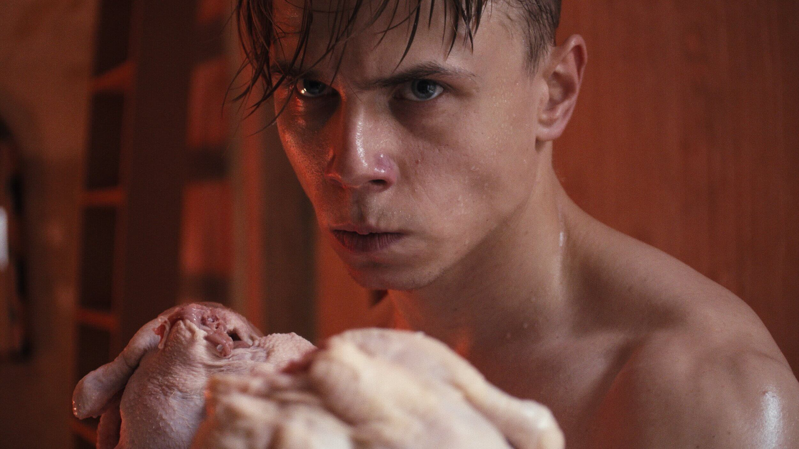
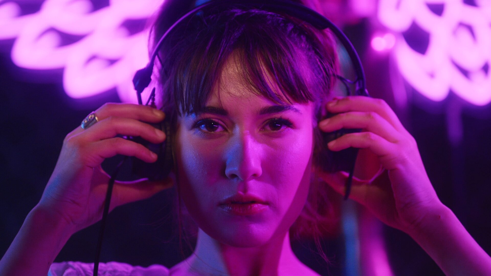
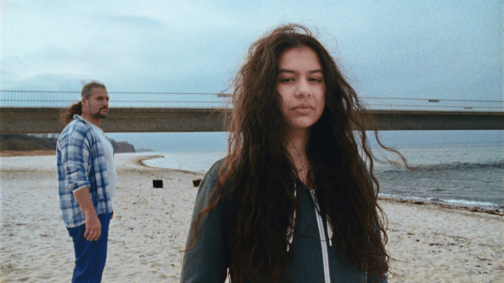

I am Benjamin Packer, [and] I am Australian, grew up in Australia, but for the last 4 years I have been Berlin-based – working as a colorist, freelance colorist, mostly in film, music videos, TV commercials.
And for people that may not be aware of what colorist is, I describe it in a couple of ways; the most simplified version, that’s kind of easy for people to understand, is that I create highly customized Instagram filters (laughs) and then it builds from there, it gets much more specific.
Yeah so I mean (...) when I tell people that I'm a colourist, a lot of people do not know that the job exists. It was the same for me – in high school actually what I wanted to be was a mix engineer, audio engineer, and during high school I was doing some kind of community radio broadcasting, and that was my way into media.
From high school, I wanted to continue it, and to study audio engineering and mix engineering at University but, because I didn't have the kind of musical training that I needed to get into the music conservatory, I applied for a media degree instead – I said, "media is close enough, right? I'll do all my music as University electives, and I can maybe get into it that way".
So when I was studying, I did a placement as part of my studies in a studio, and I was working as a sound editor or sound assistant there, and was spending most of my time with the main engineer – and he would say "can you go and find some sound effects of a middle-aged woman wearing high heels, walking on gravel", and I would search through the library to find that specific sound.
After working for that company for a couple of weeks, there was some nice connection there and they offered me the possibility to keep working with them on weekends in a live sound environment, so I was doing kind of live PA [Production Assistance] with live sporting events broadcasting. I did that for maybe a year, year-and-a-half, and there was a lot of -because it was sports broadcast- a lot of crossover between the audio side of things and the picture broadcasting, so I got to know some of the picture team.
And then, as my studies came to an end I was offered more work during the week, cause previously I was only doing weekend work, and I joined their machine room team. I was basically an assistant for them, working with the tapes, because they were still shooting on tape at the time, so tapes would come into the studio and it was my job to digitize them, or if they had finished the production, and they were delivering master tapes, it was my job to lay them out to do the QC [Quality Control] checks.
It was working at that company where I first came across color – because right down the hall from where the main audio studio was, there [was] the color grading studio.
So yeah, I ended up working for that company for almost five years I think, from when I had first started in the sound department, until I eventually left. I worked my way up from being the machine room assistant, to being the assistant editor; I did some editing of my own for a little while, and then moved into online editing and visual effects, compositing work for commercials.
And my, the boss of the company was the lead colorist and VFX supervisor; and he taught me quite a bit, I was kind of coming up underneath him, but the size of the market where I was, and my desire to learn more, and his schedules, kind of weren't quite working out – so I was looking to develop further, and then that is how I ended up in Berlin.
I found a specialized education program, that was run for a number of years in Berlin; they had a selection process where they only selected 10 students per year, and of those 10 students, I took one of the two spot for non-European citizens. So me, being Australian, I was quite lucky to even get into the program.
Basically, once I was selected, I told my boss, "look, I'm going to go Berlin, to do the study program", and basically sold all of my stuff in Australia, and packed it all away and moved to Berlin -the original plan was to stay 9 to 10 months-, and I did the program, and at the end of the program (…) I thought that I would move to the UK for a while, there's quite a busy industry in the UK, so I went there for a month and a half, two months.
But it wasn't quite my scene, as a small town kid from Australia to a big city; it was a bit overwhelming (laughs) – luckily I found another position back in Berlin, and I ended up coming back to Berlin, worked in a company for a couple of years; and for the last year and a half, I've just been a freelance.
Yeah I mean, it depends on the project. For example, a lot of music videos and commercials that I'm involved with, because of the schedules, they don't usually have time to develop a "look" or any kind of grading ideas upfront; but a lot of the nicer projects that I have been involved with, with short films for example, I try to get involved as early as possible.
I am actually not usually too involved during the shoot, but during pre-production, I will try to get involved with the DP [Director of Photography] and the director of the art department, and when they're doing camera test lens test, testing production design, and costume test, makeup tests, I will usually try to be involved in that stage, so we can really start to craft an idea of where a project would like to go.
And then I can build, I try to build a very barebones, flexible variation of the kind of ideas that we we are all thinking about – so that when everybody's looking at a monitor, they're actually looking at something that is close to the final product.
And that usually means that you can start the work earlier, and you can start designing a world, and a look, and a mood to the project; that means that when we get to the end, you've actually already done a lot of the hard work, or the big creative task of coming up with this mood, and [the] feeling is already there.
And then you really get to spend all of you all the time finessing it, and really getting into the details and getting it getting closer and closer to perfection.
I think – it might be kind of controversial, but I think that the value that color can bring to a project has more to do with the value that people see in it.
You mentioned at the start [that], talking about color is really something that is difficult to do, there is no – I mean there are ways to measure color, and to have standards about color, but when you and I talk about the color “red", the image that you have in your mind of the color red is probably different to the image that I have in my mind.
We're going to be thinking of different shades, and a big part of working together with other creatives, because usually the coloring process is very collaborative, it's actually about kind of building, building the language and getting some kind of understanding of the other person's sense of color.
And you really, for every project you really kind of have to spend some time with the person to understand how did they see, how do they think, what does it mean when they say they want something darker: do they want it to actually be physically darker, or do they want the "mood" to be darker?
So yeah, there is, there's a lot that's open to interpretation (…) when somebody is really considerate to the grading process, it just means that that's something that they are also really taking into consideration themselves, and that they kind of have to have a little bit of understanding of the power themselves of the mood that they can bring through it.
I mean, I can always bring some kind of mood myself to a project, and also part of the process is that I make suggestions based on what I think is appropriate, based on what I've seen; but for most projects, if the creativity is in there, you can usually, at least for me, by now I can usually just look at a project and say, "okay, it's been shot in a certain way, there are certain stylistic decisions that are here, framing and storytelling", you know, so there's a particular style that would be really nice on the project.
And you can kind of see it and bring that out; but at the same time, you still have to have the understanding with the other creatives to be able to talk about it to bring that out. Yeah, it's just another tool that you can use in order to bring emotion and mood to something.
It definitely helps to have an understanding of what is possible with the tools that are around. But yeah, I also see – the grading should definitely be a supporting role; I won't be able to get the quote, right, but Dave Hussey I believe said it; he's quite a well-known colorist that works at Company 3, one of the largest companies in the industry.
He has a quote that is something like, along the lines of: "we work really really hard to make sure you don't see what we do". You want to be able to feel it, you want to be able to be aware of it, but you don't want your attention to be drawn to it.
So it is definitely a supporting role, because there are plenty of films out there that are not graded very well, but the story and the emotions that are in them [are] great. And so if we're going the other way, if you get a story that's rubbish it's just a boring story, there's nothing interesting about it, it doesn't really matter how beautiful it is (laughs), because nobody is going to care.
There are certainly some kind of like, trends, that happen during the years, with different productions. I think at the moment, the way the industry is going, it's kind of in a period of re-discovery, so that's kind of the general history of color grading, it started back when it was color-timing, and it was really just shining lights onto film strips and processing it that way.
Then eventually we got the ability to scan from film into a computer, and to be able to make some adjustments there; but it would still need to be printed out to a film again, so you were still kind of limited in what you're able to do.
And then we got digital projection, and we kind of went into digital cameras: that was also a period where there was some more kind of experimentation, and people are still understanding that technology. So at the moment, we're going through another period of discovery, because the technology is moving away from the standard projection formats that we've been used to.
Previously, if you were creating a feature film, you would be, no doubt, working around the main master version. And everybody would go and see what would be the cinema version, and you would have to go and sit in a dark room, watch it being projected from a projector onto a white wall, at 48 nits, or 44 lamberts, depending on which system you use.
And that was the standard, that's what everybody was going to watch. But now that we have new platforms for consuming, most people are shifting to the streaming services, they're shifting to mobile devices or whatever the technology that's available that you actually view the content on is different.
In most situations now, instead of looking at a projection with a low luminance, you're looking at it some kind of screen, with a much brighter output – mobile screens have HDR mode, so the range of contrast that you're able to display between black and white is a lot larger, and because we're moving into this kind of different technology, that [allows for] a different experience.
I think that a lot of people are still discovering what is possible with the new medium, because now we're shifting away from the main version being a cinema projection to actually perhaps the main version is the Netflix version the people going to see on the TV at home.
I actually see my work as a contrast of three things: it's more like a triangle that I move within. There's the technical, scientific background of it, which is really about understanding quite deeply the process of what is physically happening; and that can be an understanding of lenses, and why light reacts a certain way through lenses, or why there are blurs or flares, or the technical process of 1s and 0s that [run inside] computers, why it happens that way.
And I think understanding that, and understanding why something happens, is what gives me the ability to be creative; because once you start to understand the technical side of it, you can say "okay, look, this is the correct way", airquotes, "of you being able to do something, and creating something", [and then] when you understand the process, you can go into any kind of step of the process and make [intentional] mistakes.
As technology advances, we are getting closer and closer to perfect images, and having everything really replicating exactly what has happened on set, and being very clean. But the process of filmmaking is often about the kind of happy accidents that happen along the way: shooting on film, analog film for example, you don't actually represent 1 to 1 what you see in the world, it adds a kind of “character”.
It’s the same for the cameras and lenses that you use; they have their own kind of flavor, and being able to understand what they do (...) you can provide this kind of creativity. In the past, we might have had to use [certain] lenses, or shoot on a [certain] film, but now we've got the ability to take some kind of filtration idea, and pair it with a digital thing that hasn't ever really being combined before.
(…) But then the third part of the triangle is the personal side of things, so being able to relate to other people and being able to communicate with them, and understand, yeah, if they like something or if they don't like something.
A lot of the times with projects, I had one recently where actually a lot of my time and effort in the grading session was not spent grading, it was actually spent a little bit more as the therapist at the end of the project.
Because it had been quite a long process and your – your job as the colorist, you've got one week or two weeks, at the end of the project, to make sure that this person is happy with their work and their results, and it's something that they can take away with them and present to the world.
And often times, when you're sitting in the dark room together for a week, that's their chance to be able to vent out, or to be able to talk about everything that went wrong during the project. And you can try to fix some things, some things you just can't fix, and you just going to have to help them through the processing, and get to the end result eventually.
I think that LED walls and all are very nice tools to have – I personally have only worked on one project that was shot with an LED wall, and at least the issue that I had with that project was that it was quite difficult to find the right balance between the foreground live-action set that is in the studio, being lit with a correct ratio for the wall in the background, which is emitting light.
You can somehow still sense that the wall is a light-emitting surface, once it's been shot, which is not a sensation that you have when you just put, take a camera out and point it at a tree outside; you don't have the impression that the tree is glowing (laughs).
But somehow, when you put the same image of a tree on an LED wall, your brain just kind of knows that it is illuminated. Yeah, it's at the moment, that's kind of [the latest] uncanny valley thing, that still needs to be worked out.
The speed of research is very interesting because, I don't have the exact numbers, but I was having a conversation with some other colorist a while ago where (…) he had done some calculations, he basically looked at Kodak who had been the major image research body for about a hundred years, through producing analog film.
And and he calculated roughly, let's say, that there was 15, 20 top scientist at Kodak over a hundred years – so he calculated out how many hours of research and development they would have put into understanding images, getting their image science to the level that it was, before they themselves came up with digital sensors and shot themselves in the foot (laugh).
By his calculations (…) Apple is able to do about twice the amount of hours that Kodak had done in their lifetime, they can do that in about a year, because they have devices everywhere, that are actually able to give feedback, and they're able to actually collect the feedback on the process – whereas Kodak was a very one-way straight [process], they would do their research and we put it out there, and maybe get some feedback.
And that's still talking about just one company (...) but then you can also add the same kind of manpower from companies like Samsung and Sony. So I think generally, the computing power is going to accelerate very very quickly, but I think that it will become, I just think it's probably going to end up being more and more important to understand the process.
Because as we get a more complicated process, and a more perfect process, being able to know where to dive into the system in order to break things in a nice creative way, that gives some kind of different effect, and different results, instead of just kind of breaking it and then the system doesn't work – that’s going to be quite important, to really understand from A to Z, all the steps that are in between, and really what the general process is hiding in it in order to be able to tweak them.
(recording problems)
Yeah I think that's probably what it is, I have been for probably for a year, or so now, I’ve been getting into creating some of my own tools – I'm not much of a coder, but I'm trying to teach myself some kind of code so that I can give myself the ability to get into the system and to be able to break it in a way that I want to. I think that's a really, it's an interesting direction for me to go into.
(...) Like I said, I’m not much of a coder myself, but you could still go and get a bunch of different packages and not actually understand how any of the packages work, hack them together into something that fulfills the purpose that you want, and achieve the task.
But I think if you don’t really understand how each of the parts are working, then at some point you’re kind of losing a little bit of control along the way, which is fine, sometimes you don’t need to know the full depth of a package but – yeah, it’s really, going through the process and then just ending like, okay, maybe I don’t need to know so much about this, I can just let that be (laughs), to let it do its thing on its own.
I think it's really nice to be able to go and find somebody that you can really kind of collaborate with, and learn from.
Don’t be afraid of collaborating with many people; I think that's that's probably the nice part about of what I do is, is that there is no correct way of actually grading, it's really about kind of meeting different people and finding out what they want, learning from each other, and going through that process of pulling stuff apart and putting it back together again.
Because yeah, two different people will have different results from the same ingredients. Actually one of the nicest – when I was studying, one of the nicest exercises that we did was [one where] had a speed challenge type exercise, where we were given some material; I think it was a 4-minute long music video or something, and we were given 3 hours to work on it, from start to finish and delivery, to just sit down, grade it, deliver it and be done.
And so, because the time frame is limited, you're left to quite a lot of your own understanding of what the project is, or its creative interpretation. And all of us, all came out with 10 different results, even though it's the same material, using the same equipment – I think a lot of that difference is, I think came from people's interpretation of how they see something.
"Just make", "just make". I only have one tattoo, and it's [that], tattooed on my chest. The whole "just make" thing, it's kind of fallen a little bit by the wayside lately, but eventually I would like to get it back. It basically started when I was still in Australia, I was part of a group and we were trying to (…) just do something, just make it, and finish it, and then once it's finished, then you've learned everything that you're going to learn from it, and then that allows you to take your next step.
For the group of us it was really, we were a whole bunch of different creatives, we were developers, photographers, directors, editors, accountants, and it was a real mix of different people, and it was just, every two weeks, we would have some kind of themed challenge.
And the idea wasn't necessarily like "this needs to be amazing", it was just like "let's make something, and then we'll have the chance to talk about it, learn from each other, and then we'll move on to the next one”.
It changed my personal approach to how I grade as well (...) when I started out, I would land on a shot and think "okay, how do I make this short a perfect shot", and then I would start working and working and working [on it], and then go to the next.
But now, I’m very much – I start with a much wider picture, and I can then go through and get everything working similarly, and working in balance, and then I start refining, and start getting down to more and more details, [so] it becomes like “just do it", and then watch it again, and then the next time (…) it starts getting better the more you watch it.
You also need the flow of context when you’re grading too, you need to see what has happened before, what is going to happen next, and how everything connects; if you end up spending too much time, focused on one little shot and making sure that that one thing is perfect, you start to lose context.
And there have been times when, when you step back, you realize you spent ages in one shot, and think ok, that one looks great, but everything else around it now looks terrible.